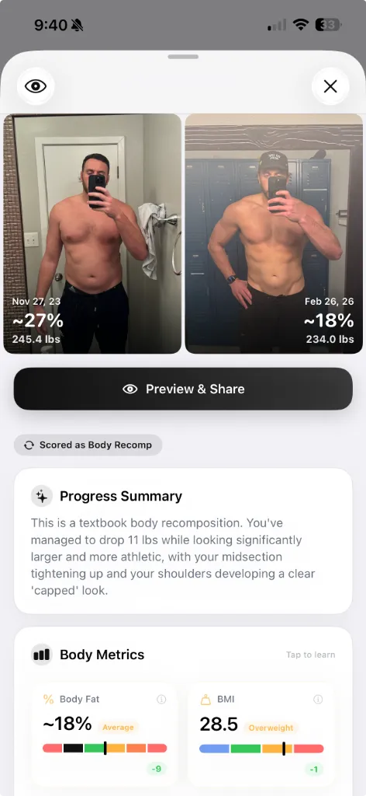

How to Track Body Recomposition with Photos
Body recomps are a mental grind. The scale won't move, the mirror lies, and your camera roll is a mess. Here's how to use AI photo analysis as an unbiased set of eyes that proves your recomp is actually working.

The beta is live — try it free.
Join the Beta on TestFlightYou've been hitting the gym consistently. Your lifts are going up. Your clothes fit differently. But you step on the scale and the number is exactly the same as it was two months ago.
Welcome to body recomposition — the most rewarding and most maddening thing you can do in fitness.
Recomp is when you lose fat and gain muscle at the same time. It's the holy grail of natural training, and it's incredibly common in beginners and intermediate lifters returning after a break. The problem? It's almost completely invisible to every traditional tracking method.
Why recomp is invisible to your scale
Muscle is denser than fat. When you lose a pound of fat and gain a pound of muscle, you look dramatically different — but you weigh the same. A bathroom scale, a smart scale, even a calibrated gym scale will all tell you: nothing happened.
That's the "recomp paradox." The better your recomp is going, the less the scale moves. For someone training hard, this creates a brutal psychological loop:
- You train hard and eat right. You feel stronger. Your belt fits looser.
- You step on the scale. Same number. Maybe up two pounds.
- Doubt creeps in. "Am I actually making progress, or am I just spinning my wheels?"
- You second-guess your program. Slash calories. Add more cardio. Break the recomp.
This is the mirror trap. You see yourself every day, so you're the last person to notice the subtle leaning out or the extra muscle density. You need an external, objective measurement — and a bathroom scale is the wrong one.
Progress photos: the right data source
Your progress photos are the single most honest record of your body. Unlike a scale, a photo captures the actual visual reality of your physique — the shape, the definition, the proportions.
The problem most people have isn't taking the photos. It's reading them. You end up with a messy camera roll and a dozen variables — lighting, angle, pump, what you lifted that day, what you weighed — that you have to mentally stitch together.
That's where AI analysis turns your photo collection into an actual tracking system.
How to track body recomposition with AI photo analysis
Instead of eyeballing two photos and guessing, GainFrame acts as an unbiased set of eyes that connects the dots between your lifts, your weight, and your actual physical changes.
Here's what the AI extracts from a single progress photo:
Body Fat Estimation
A visual body fat percentage based on geometry and definition — not electrical resistance. Watch it drop while your weight stays flat. That's recomp.
Muscle Group Scoring
12 individual muscle groups rated from Needs Work to Strong. See exactly which areas are developing and which are lagging.
GainFrame Score
A single 1-100 number that captures your overall physique. During a recomp, your weight stays flat — but this number climbs.
Workout Context
Your Hevy workout data auto-attaches to each photo — so you can correlate volume increases with visible changes.
Connecting your lifts to your physique
One of the most powerful things about tracking a recomp with GainFrame is that it doesn't treat your photos in isolation. When you connect Hevy, your workout data automatically attaches to the progress photo taken on the same day.

This means you can scroll through your timeline and see a direct relationship: "My bench volume went up 15% over six weeks — and my chest went from Developing to Strong." That's the kind of feedback loop that keeps you locked in during a recomp, when the scale is giving you nothing.
The proof: what a recomp actually looks like
Here's the visual that no scale in the world can give you. On the left: 245 lbs at approximately 27% body fat. On the right: 234 lbs at approximately 18% body fat. Only 11 pounds of difference on the scale — but a 9 percentage point drop in body fat and a visibly more muscular build.

GainFrame's AI scored this as a "textbook body recomposition" — recognizing that the midsection tightened up, the shoulders developed a clear capped look, and the overall physique became significantly more athletic despite minimal scale change.
A recomp doesn't show up on a scale. It shows up in a photo. AI analysis is the fastest way to quantify exactly how much progress you've made — so you never second-guess a successful program again.
How to start tracking your recomp today
- Take progress photos weekly. Same pose, same lighting. Front relaxed, front flexed, and side are the best three angles for tracking recomp.
- Import your existing gym selfies. GainFrame can analyze photos from your camera roll — you probably already have months of data sitting there.
- Run AI analysis monthly. Tap a photo and get body fat, FFMI, muscle group scores, and a GainFrame Score. Track the trend, not individual readings.
- Connect Hevy. Let your workout data auto-attach to each photo so you can correlate training volume with visual changes.
- Stop checking the scale daily. Weigh yourself if you want, but use the weekly average for context — not as your primary metric during a recomp.
Your gym selfies aren't vanity — they're the most accurate dataset you have. Stop letting a piece of glass on your bathroom floor tell you nothing is happening.
Related Articles
Try GainFrame free
AI body composition from your progress photos. No account needed.
Join the Beta on TestFlightRequires iOS 17+ · iPhone only